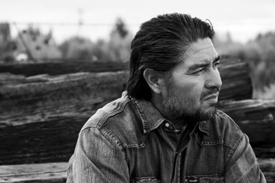
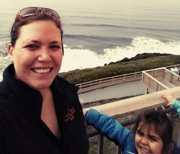
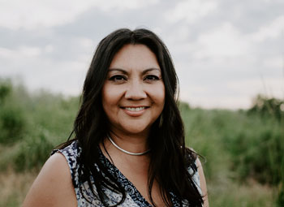

About JNS
We publish academic articles and news, preferrably written by Native Americans/Alaska Natives. Based upon feedback from Native American authors
and researchers at various conferences and discussions, it is apparent that many academic journals and institutions have trouble accepting manuscripts
that have been developed from Native American/Indigenous knowledge systems or perspectives (Native Sciences). Many academic journals also charge high fees
for publishing that typically beyond the means of many Indigneous peoples, so in order to keep this website Open Access and free we show ads (if we get some!)
to our readers. If you want to advertise here please contact the Editor.
Peer Review Process
We have a growing network of reviews who can provide a fair assessment and crtical review of your work. We will
make every effort to have your paper reviewed by a Native/Indigenous person who specializes or has experience
in the subject area.
Advisory Alliance
Cleve Davis, PhD

Hello! I am the founder of JNS and started this journal to help Natives "get their words out". There is strong power ("
Boha")
in words and Native people are strong when they choose to be. In fact, it is my belief that the federal government continues
to oppress us Natives because they fear our strength, not to mention they know what they did to our ancestors during the Great American
Genocide. Any how, I am a Newe person and I have lived on the Fort Hall Indian Reservation in Idaho most my life. I know first hand about the the many and
profound problems that face my community and know many of these wicked problems also exist in other Tribal societies. I believe strongly in
Tammi Na
"Our Father" or what is known as the Great Spirit and I participate in many sacred circles ceremonies. I have learned many things from my spiritual
connection with the Great Spirit. For example, problems such as alcoholism,
drug addition, child and elder abuse, violence, etc. that wreak havoc on the Reservation can be attributed to the breaking of the family circle and
a lack of spirtuality in our homes. So, I do my best to keep my family circle together and pray. I also believe in the
passing of knowledge to others, so they know how things came to be, where they come from, and most importantly to instill hope. Therfore, it is my goal that this journal
will contribute to the sacred tradition of passing of knowledge from one to another. In regard to education, I am overly educated. I have a PhD in Environmental Science, MS degree in Anthropology, and BS degree in Botany. I have
also earned graduate certificates in Geotechnology, Statistical Science, and Web Design and Development. To support ourselves and the JNS, my wife and
I manage Chokecherry MicroFarm and do some environmental consulting with
Big Tree Environmental LLC . I have
also taught in the Anthropology and History Departments at Idaho State University as an Adjunct Professor and speak occassionally at public events. In addition to
publishing
The Palouse Prairie, A Vanishing Indigenous Peoples Garden
here in JNS, I have also published
Racists and Colonizing Metaphors
in Indian Country Today. I am also a member of the Native American Journalists Association and the Idaho Native Plant Society.
Finally, I want to say I truly hope you consider publishing here and that we need more Natives to speak up! I know it is hard to write and takes a lot of time, but once
you are finished you have something that can improve the lives of your community, family, and friends. That is something to be proud of.
Monique Wynecoop, MS

I am Mountain Maidu, a descendant of the Pit River/Maidu tribes of Northern California and my husband and children are Spokane Tribal
members. Since 2008, I have been working as a Fire Ecologist for the US Forest Service (USFS) within my family's ancestral homeland
in Northeastern Washington. I have recently become a co-coordinator and tribal liaison for the Northern Rockies Fire Science Network,
as well as a board member for Northwest Scientific Association and Diversity & Inclusivity committee member for the Association of
Fire Ecology. In addition to a MS in the University of Idaho Fire Sciences Program, I received dual Bachelor's degrees in Ecology &
Conservation Biology, Fishery Resources, and Applied Indigenous Studies (with an emphasis in Tribal Water Rights and Treaty Rights).
Prior to my current position, I have worked as a seasonal firefighter, hotshot crew member, and a fisheries and hydrology technician
for the USFS, Idaho Fish and Game, and the Nez Perce Tribe. It is my goal that my children and all of the future generations of tribal
people feel that their best interests are addressed in the management of our natural resources, on and off the reservation. My
work has emphasized promoting tribal sovereignty on and off the reservation by sharing our stories and history and promoting
cross-boundary collaboration with tribal and non-tribal agencies. My research has focused on building transparency and trust
between agencies and incorporating tribal and community feedback into forest management practices. My most recent publications
are
Getting Back to Fire Sum�s: Exploring a Multi-disciplinary
Approach to Incorporating Traditional Knowledge into Fuels Treatments and,
Tribal Fire and Forest
Management: Confederated Salish-Kootenai Fire History, Philosophy, and Resource Management Strategies.
Dawn D. Davis

Dawn D. Davis is a mother, a wife, a micro-farmer, a small-business owner, a PhD student, a Newe and a member of the Shoshone-Bannock Tribes.
She resides on the Fort Hall Indian Reservation in Idaho with her husband Cleve and two daughters Lilianna Big Tree Nolan and Isla Rain.
She holds a master's degree from the University of Arizona for her thesis titled, "Preservation and Sustainability of the Revered Peyote
Sacrament in Reverence of the Native American Church". She is currently a Ph.D. student at the University of Idaho. As a student, Dawn is
a twice awarded National Science Foundation (NSF) recipient as a fellow under the Integrated Graduate Education Research Traineeship and
an Indigenous STEM scholar including research funding from the Pacific Northwest Alliance-Cosmos. Her research focuses on the environmental
and anthropogenic issues that surround the revered peyote (Lophophora williamsii) plant which is integral to her spiritual practice as an
Indigenous woman. Current research includes the use of GIS to model existing and historic habitat. Dawn has shared her research among Native
American, academic, ethnobotanical, and psychedelic audiences nationally and internationally.
As a student, and from her travels, Dawn observed the difficulties and challenges Native American/Indigenous students were confronting in
pursuit to publish their work in respectable journals. For this reason, her and her husband founded the Journal of Native Sciences with the
hope that it would serve as a platform to highlight the research and work being conducted by Native American/Indigenous researchers,
elders, storytellers, and other knowledge holders and seekers. As a member of the Advisory Alliance, Dawn is excited to support her
fellow Indigenous people as they share their sacred words.
|
|